- 13 Jul, 2020
- 8 min read
INTRODUCTION
Problem
According to the 2019 report published by the company DOMO [1] in which they study the amount of data collected in each minute states that people are tweeting their thoughts at 511,200 tweets per minute. Indeed, the world is becoming more and more hyperconnected and the amount of information is increasing. However, companies are no strangers to this, and they generate large amounts of data that can be used to generate value in decision making and thus seek greater profitability in business. In the case of the financial sector, there are two primary data sources: external and internal data sources [2]. Internal data can be transaction data, registration data, application data. External data can be from any social media and website.
The main objective of this article is to share the main findings about sentiment analysis in the banking sector using the Twitter API, AWS Comprehend and AWS SageMaker.
Having said that, it is important to highlight that this study has taken 3 Colombian banks, the data was generated from the Twitter API, from the Jupyter Notebook of AWS SageMarker [3], with specific hashtags for each of these banks, thus generating all the information corresponding to customer feedback. After that, AWS Comprehend was used to analyze the input data (API) using the power of NLP algorithms to extract key phrases, entities and feelings automatically(SEE FIGURE 1). Because these AWS models are pre-trained, it was possible to classify each comment into three totally different scores: positive, negative and neutral.
In the same sense, the questions posed for the analysis were:
- Which bank has the highest number of tweets?
- What is the customer's perception of the city where the bank is headquartered?
- What is the perception of the clients classified by city?
DATA
Data sources
The data is extracted from the Twitter API. Because 3 banks are analyzed, each one represented in totally different datasets, it is also worth adding that the tweets were taken into account, the date that was published and the place of origin (SEE TABLE 1). Later on, new columns are added with the different types of positive, negative and neutral score respectively.
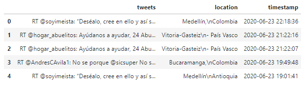
Table 1
For this phase of exploratory analysis it is fundamental to check the existence of null values and for this case in the column "location" there are 10 null values (SEE TABLE 2). In this way the data is cleaned (SEE TABLE 3).
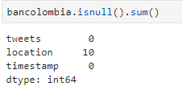
Table 2
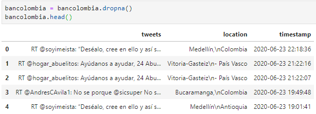
Table 3
However, it is possible to check again that in the dataset there are no null values (SEE TABLE 4)
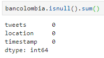
Table 4
It is important to emphasize that this same treatment in the preparation of data was executed exactly with the 3 datasets of the banks in order to make analyses with clean data. To better illustrate the above, an example of a dataset with the different columns that was taken into account for the analysis of the present study can be seen below.
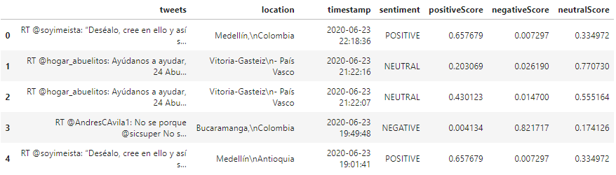
Table 5
Methods
As mentioned above, the data is generated from a twitter API call, after that, AWS Comprehend (SEE GRAPHIC 1) through its pre-trained algorithms classifies the feelings of the content of each of the comments in three different types: positive, negative and neutral. Finally, this classification is displayed in tables containing relevant information to later analyze each comment individually.
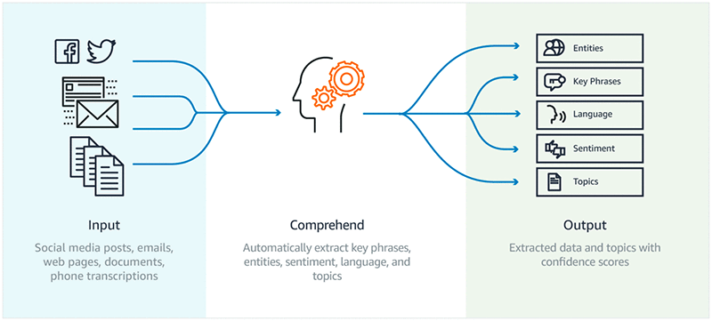
Graphic 1
Analysis
Bancolombia
The data generated through the twitter API with the hashtag #bancolombia, extracted a total of 59 tweets, however, in the process of data cleaning, explained in the section data sources, the dataset was left with 49 tweets. The date is in the range of 06/16/2020 to 06/23/2020. In CHART 2, the main cities can be seen, being Bucaramanga the one with the highest negative score with an average of 0.8217, followed by Cartagena, Cali and Medellín with 0.5923, 0.4703 and 0.3444 respectively.
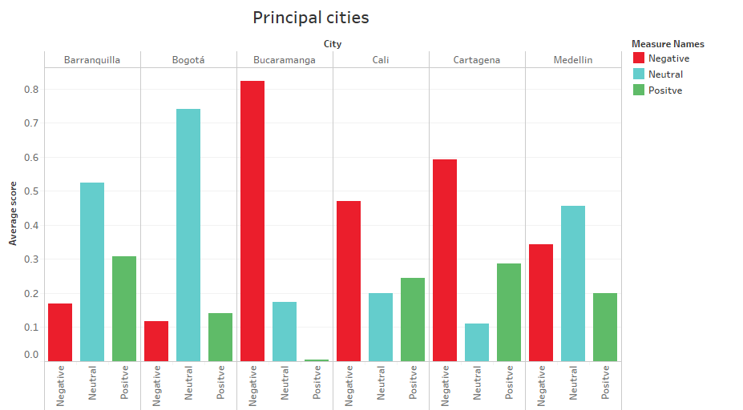
Chart 2
The main reason that the city of Bucaramanga and Cartagena have a high score is that there was only one publication on a specific day (SEE CHART 3).
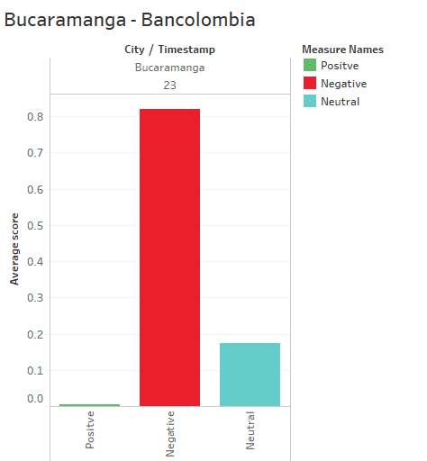
Chart 3
The case of Cali is similar as it is only published on two days (June 16 and 17). Therefore, since the city of Bogotá and Medellín present comments on more than 4 different days, this study has excluded the cities where the number of days is less than 4, this in order to ensure an unbiased analysis and with the aim of being as accurate as possible. In conclusion, for the Bancolombia dataset only the city of Bogota and Medellin were analyzed, with tweet numbers of 12 and 20 respectively(SEE APPENDIX 1).
Bearing in mind the above, the trend in the comments generated in the city of Medellín is towards neutral thinking with 0.4567(SEE CHART 4). However, it is important to note that although Bancolombia is headquartered in this city, the perception of its customers presents a higher negative score with 0.3444 compared to 0.1173 in Bogota.
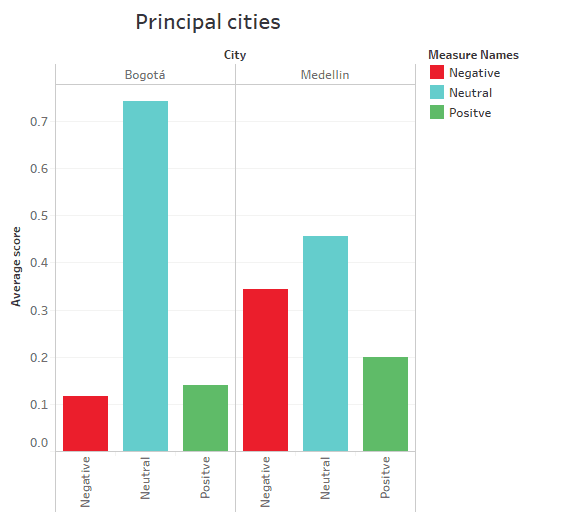
Chart 4
It can be concluded that Bancolombia's clients in the city of Medellín do not present a clear trend in terms of thoughts as if they were in Bogotá with a neutral score average of 0.7416. The positive and negative scores for this city are very similar, 0.1411 and 0.1173 respectively, but the trend is clear.
In addition to the above, in CHART 5 we can see the trends with respect to the different types of scores for the city of Medellín, in the date range mentioned above, we can conclude that between 06/16/2020 and 06/17/2020 there was an upward trend towards negative thinking on the part of clients. However, it decreased to start a neutral position on 06/18/2020 and from 06/19/2020 the positive perception of the clients increased, leaving the negative and neutral perceptions in a lateral trend.
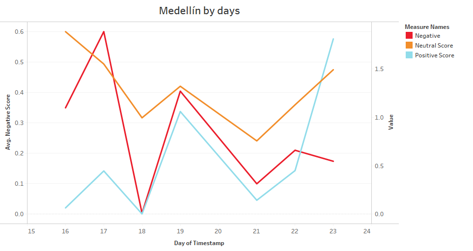
Chart 5
As for the city of Bogotá (SEE CHART 6), it started on 17/06/2020 with a negative position from customers. While the neutral position was consolidated from 06/18/2020 marking a clear tendency since the positive thought was decreasing little by little in the course of the days.
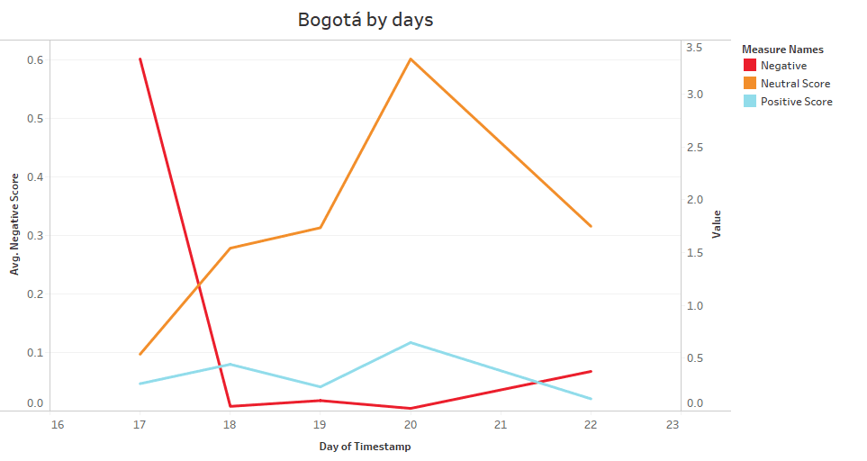
Chart 6
Similarly, the dataset presented international opinions (SEE APPENDIX 2) from different latitudes (SEE CHART 7), with Barcelona presenting a negative position towards the bank, in the other cities the comments generated neutral trends.
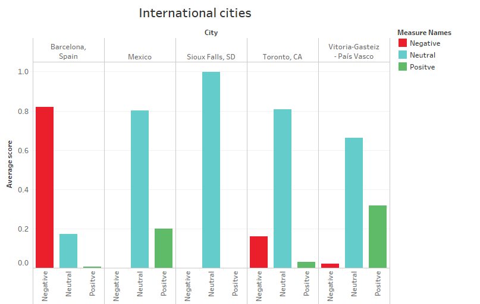
Chart 7
Banco de Bogotá
The data generated through the twitter API with the hashtag #bancodebogota, extracted a total of 7 tweets, however, in the data cleaning process, explained in the data sources section, the dataset was left with 6 tweets (SEE APPENDIX 3). The date is in the range of 16/06/2020 to 20/06/2020. In CHART 8, it can be seen the cities where the publications were made, being Bogota clients where more tweets were generated, with a negative position in front of the bank in an average of 0.4006, close to the neutral position with an average of 0.3657. It can be concluded that there are diverse opinions from customers. As for Cali, it shows a clear neutral trend and Manizales a positive one.
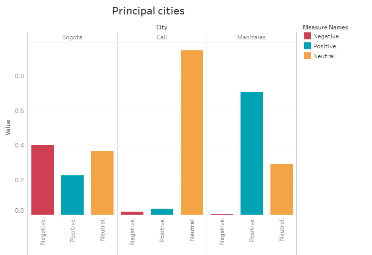
Chart 8
In CHART 9 we can examine in detail the behavior of the clients' feelings throughout the days, it starts with a strong negative position but it decreases, maintaining a neutral position and a positive position in an upward trend.
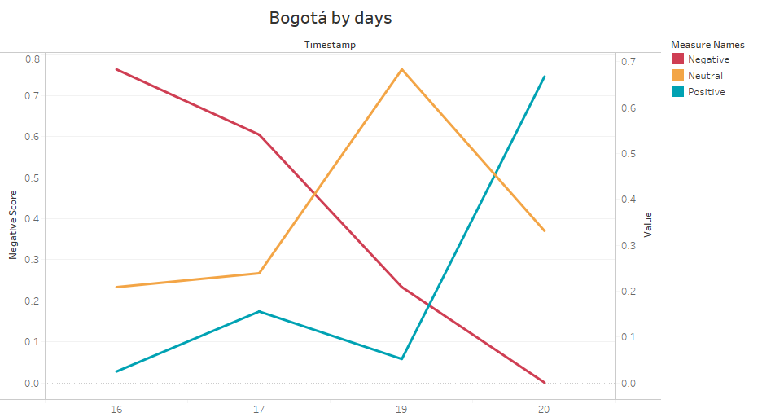
Chart 9
Banco Davivienda
The data generated through the twitter API with the hashtag #davivienda, extracted a total of 39 tweets, however, in the data cleaning process, explained in the data sources section, the dataset was left with 32 tweets (SEE APPENDIX 4). The date is in the range of 06/17/2020 to 06/23/2020. In chart 10, the cities where the publications were made can be seen. However, since Barranquilla, Cúcuta, Facatativá and Maracaibo presented 1 tweet as opposed to 24 in Bogotá, these cities are excluded to analyze only the latter.
Chart 10
Bearing in mind the above, it is worth noting that this bank is headquartered in the city of Bogotá and its customers showed a neutral position with an average of 0.7445. As for the positive and negative thinking, they presented similarities with 0.1066 and 0.1486 respectively. In CHART 11, the above can be seen, since it began on 17/06/2020 with a positive perception but decreased, thus starting an upward trend of negative thinking that ended on 20/06/2020 and in turn the neutral perception was consolidated throughout the days.
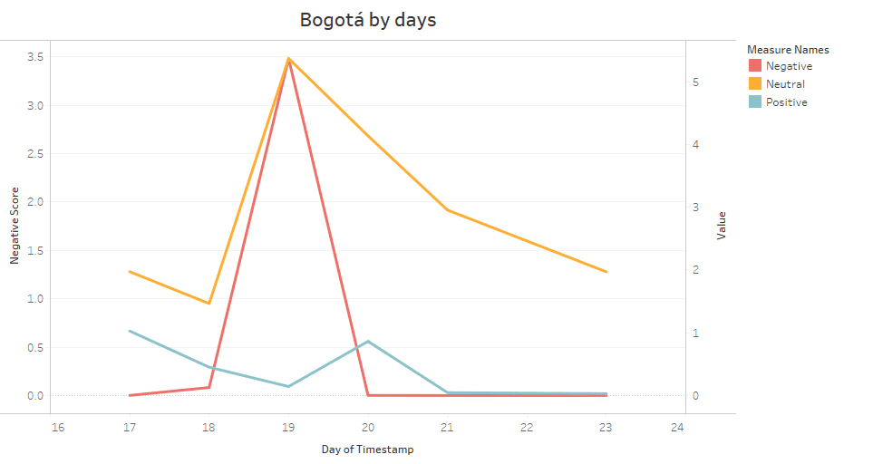
Chart 11
CONCLUSIONS
The bank that had the highest number of tweets in the dates between 06/16/2020 and 23/06/2020 was Bancolombia with a total of 49 vs. 7 and 32 of Banco de Bogotá and Davivienda respectively, it can be concluded in this way that Bancolombia's clients were more active in the specified dates vs. the clients of the other two banks. It is important to note that in the case of Banco de Bogotá and Davivienda whose headquarters are in the city of Bogotá, their clients have a neutral perception. The opposite is true of Bancolombia, whose headquarters are in Medellín, where the perception of the bank was more negative than positive.
In the particular case of Bancolombia, it shows a clear presence in international cities where most of them maintain a neutral position. Finally, it is concluded from this study that most of the comments of the three banks analyzed come from the cities of Bogota and Medellin.
RECOMMENDATIONS
Because a free layer of the Twitter API was used, it limits the number of tweets per call. It is likely that with a higher number of tweets, and consequently the datasets have more information, the results could be different or otherwise remain in similar trends presented in this study.
Finally, for subsequent projects it is recommended to take into account different inputs (SEE CHART 1), such as Twitter, Facebook and Instagram in order to increase the data and thus analyze more deeply the perception of customers in front of each of the banks
ANNOUNCEMENTS
The graphics have been published in a dashboard through Tableau Public that you can find in the following link. Also, if you want to see similar projects along with the source code you can go to my portfolio. Finally, contact me through LinkedIn or Twitter. You can find the source code for this project in the following Github repository.
REFERENCES
[1] Domo.com. 2020. Domo Resource - Data Never Sleeps 7.0. [online] Available at: https://www.domo.com/learn/data-never-sleeps-7 [Accessed 28 June 2020].
[2] M. Pejić Bach, Ž. Krstić, S. Seljan and L. Turulja, "Text Mining for Big Data Analysis in Financial Sector: A Literature Review", Sustainability, vol. 11, no. 5, p. 1277, 2019. Available: 10.3390/su11051277 [Accessed 26 June 2020].
[3] "Amazon Comprehend - Natural Language Processing (NLP) and Machine Learning (ML)", Amazon Web Services, Inc., 2020. [Online]. Available: https://aws.amazon.com/comprehend/?nc1=h_ls. [Accessed: 27- Jun- 2020].
[4] "Analyze content with Amazon Comprehend and Amazon SageMaker notebooks | Amazon Web Services", Amazon Web Services, 2020. [Online]. Available: https://aws.amazon.com/blogs/machine-learning/analyze-content-with-amazon-comprehend-and-amazon-sagemaker-notebooks/. [Accessed: 27- Jun- 2020].
APPENDIX
Appendix 1
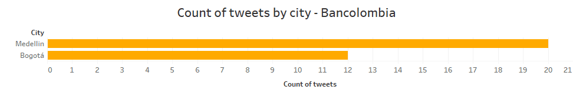
Appendix 2
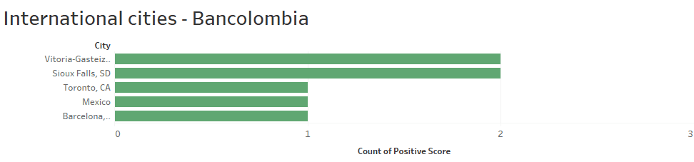
Appendix 3
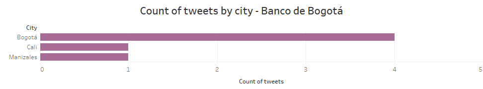
Appendix 4
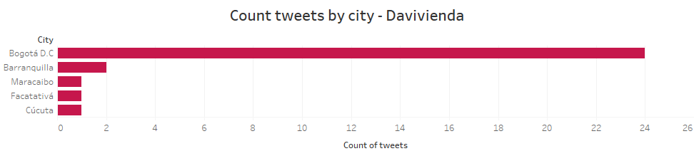